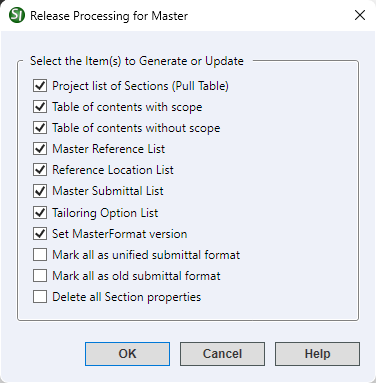
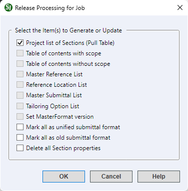
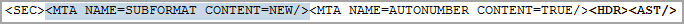

This command can also be executed from the SpecsIntact Explorer's Right-click menu.
The Release Processing command offers a variety of functions that run simultaneously on the selected Job or Master. This command is primarily used for processing Masters to generate essential system files by selecting or deselecting the available options. Although Release Processing can be engaged separately for the selected project to only update the Project list of Sections (Pull Table), the software will automatically run this option in the background when switching from one Job to another or by using the keyboard shortcut F5. Refer to the notes below since some of the Release Processing options generate Web (.htm) files.
 Due to DoD security policies, Web (.htm) files are restricted from opening directly through Microsoft Excel. To ensure the successful opening of these files, make sure you generate them as an Excel spreadsheet, or you can disable the Use Excel to open HTML files in Exported Files folder option within the SpecsIntact Explorer's Setup menu > Options > General tab. This will ensure the automatic opening of web files in the default web browser.
Due to DoD security policies, Web (.htm) files are restricted from opening directly through Microsoft Excel. To ensure the successful opening of these files, make sure you generate them as an Excel spreadsheet, or you can disable the Use Excel to open HTML files in Exported Files folder option within the SpecsIntact Explorer's Setup menu > Options > General tab. This will ensure the automatic opening of web files in the default web browser.
If you prefer that the Web (.htm) files consistently open as a web page in the default Browser, you can adjust the setting within SpecsIntact. To do this, navigate to the SpecsIntact Explorer's Setup menu > Options > General tab, and deselect the Use Excel to open HTML files in Exported Files folder option. Once this setting has changed, then SpecsIntact offers the flexibility to temporarily override this behavior by right-clicking on an exported Web (.htm) file (e.g., UFGS4288.htm) and selecting Open in Microsoft Excel. This allows you to analyze, edit, and save the Web (.htm) file as an Excel (.xlsx) file.
|
Default Settings for Masters
|
Default Settings for Jobs
|
 |
 |
- Select the Item(s) to Generate or Update:
- Project list of Sections (Pull Table) - Updates the project's Pull Table to reflect any changes, like additions or deletions of Section (.sec) files made outside of the SpecsIntact application through Windows Explorer. The Pull Table (PULL.TBL) is accessible through Windows File Explorer within the Job's pulldata folder or directly within the Master folder by right-clicking in the selected project and selecting Open in Windows Explorer.
- Table of contents with scope - Generates a Table of Contents for the selected Master (SCOPE.DOC), incorporating a brief description of the Section's requirements. These requirements are located in each Section's general note, surrounded by SCP tags, and can be accessed and modified through either the Section Properties or the SI Editor. This option is only available for Masters.
- Table of contents without scope - Generates a Table of Contents for the selected Master (SHELF.DOC) and lists it along with the Section files in the SpecsIntact Explorer. This option is only available for Masters.
- Master Reference List - Creates a comprehensive list of all References cited in the Master, which the SI Editor's Reference Wizard uses. To edit or print this list, refer to the Process menu > Reference Processing > Master Reference List tab and select either the Edit list or Print list option. The generated Master Reference List (MASTER.REF) is accessible through Windows Explorer by right-clicking on the selected Master and selecting Open in Windows Explorer. This option is only available for Masters.
- Reference Location List - Generates an alphabetical list of all References cited in the Section's text, indicating their precise locations by Section and Subpart. This generated list is located in the Master's Processed Files folder. This option is only available for Masters.
- Master Submittal List - Generates a list of all the Submittals cited in the Master and lists their location by Section and Submittal Description (SD) Number, which the SI Editor's Submittal Wizard uses. The generated Submittal List (subList.lst) is accessible through Windows Explorer by right-clicking on the selected Master and selecting Open in Windows Explorer. This option is only available for Masters.
- Tailoring Options List - Exports a list of all the Tailoring Options cited in the Master. These options are used by the SI Editor's Insert menu > Tailoring options. This generated Tailoring Options List (TailoringOptionsData.htm) file is located in the Master's Exported Files folder. This option is only available for Masters.
- Set MasterFormat version - Defines the Construction Specifications Institute (CSI) MasterFormat Version setting found in the File menu > Properties > Options tab for the selected Master. The primary source for this definition is the Section Numbers of the Master's 01 33 00 Submittal Procedures Section and the 01 42 00 Sources for Reference Publications Section. If these Sections are not included in the Master, the system will examine the remaining Section Numbers to identify the appropriate setting. This option is only available for Masters.
- Mark all as unified submittal format - Inserts a Unified Submittal Description Meta Data (MTA) tag with an attribute of NEW to the beginning of each Section, following the SEC tag throughout the selected project.
- Mark all as old submittal format - Inserts a Unified Submittal Description Meta Data (MTA) tag with an attribute of OLD to the beginning of each Section, following the SEC tag throughout the selected project.
- Delete all Section properties - Removes all Section comments and the last editor's user name throughout the selected project.
Examples
 The placement of the Meta Data tag after selecting the Mark all as unified submittal format:
The placement of the Meta Data tag after selecting the Mark all as unified submittal format:

The placement of the Meta Data tag after selecting the Mark all as old submittal format:
 The Mark all as old submittal format option is used for backward compatibility with older SpecsIntact Jobs.
The Mark all as old submittal format option is used for backward compatibility with older SpecsIntact Jobs.
Standard Windows Commands
 The OK button will execute and save the selections made.
The OK button will execute and save the selections made.
 The Cancel button will close the window without recording any selections or changes entered.
The Cancel button will close the window without recording any selections or changes entered.
 The Help button will open the Help Topic for this window.
The Help button will open the Help Topic for this window.
How To Use this Feature
- In the SpecsIntact Explorer, select a Job or Master, then perform one of the following:
- Right-click and select Release Processing
- Select the Process menu and select Release Processing
- In the Release Processing for Job or Master window, below Select the Item(s) to Generate or Update, perform one of the following:
- Leave the default options
- Select any of the available options
- Click OK
Users are encouraged to visit the SpecsIntact Website's Support & Help Center for access to all of our User Tools, including Web-Based Help (containing Troubleshooting, Frequently Asked Questions (FAQs), Technical Notes, and Known Problems), eLearning Modules (video tutorials), and printable Guides.